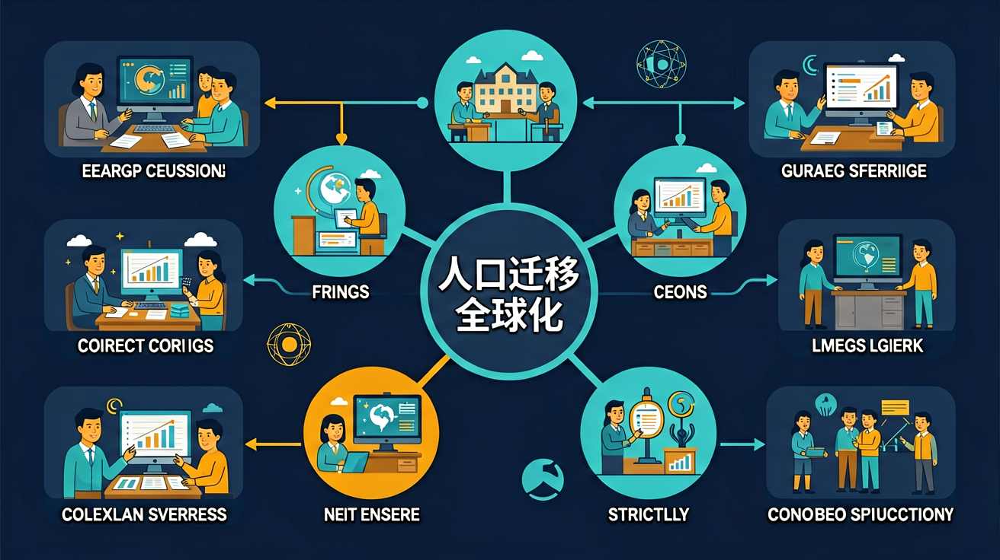

你知道世界各地人口分布不均 · 但不清楚为什么人们要大规模迁移，这又带来什么影响 · 推拉理论（Push-Pull）解释迁移动因，全球化加速了人口流动与文化交融
用推拉理论解释人口迁移的原因
分析人口迁移对流出地和流入地的影响
评估全球化与人口流动的相互作用
经济学家找工作移居另一国，这属于？
已知：你知道世界各地人口分布不均
问题：但不清楚为什么人们要大规模迁移，这又带来什么影响
解法：推拉理论（Push-Pull）解释迁移动因，全球化加速了人口流动与文化交融
👀 看见它：在生活的真实场景里，「人口迁移与全球化」长什么样？先找到一两个能摸得着的例子。
🧩 拆开它：它由哪几个关键部分组成？每个部分起什么作用、背后的原理是什么？
🚀 迁移它：换一个情境，这个结论还成立吗？试着解释一个课本之外的新例子。
类比记忆：把「人口迁移与全球化」想象成你熟悉的一件东西或一个场景——就像给新知识找一个老朋友。写下你的类比，交给 AI 学伴帮你检查贴不贴切。
口诀挑战：试着把本课最容易忘的三个要点缩成一句不超过 15 字的口诀，顺口、好记、不漏关键条件。
把你对「人口迁移与全球化」的理解画下来：标注关键词、画出结构关系，再对照讲解检查。
人口大量流入一个城市，主要的拉力是？
有疑问？点击提问！
人口迁移是指人们从一个地方永久或半永久性地移动到另一个地方居住的过程。这种移动可以是国际间的（跨国迁移），也可以是国家内部的（国内迁移）。例如，中国农民工从农村到城市的流动是国内迁移的典型例子，而叙利亚难民前往欧洲则是国际迁移的案例。人口迁移通常由推力（原居住地的不利因素如战争、贫困）和拉力（目的地有利因素如就业机会、教育资源）共同驱动。理解人口迁移需要区分短期流动（如旅游）和长期迁移，后者往往涉及户籍、社会福利等系统性变化。
人类迁移史可追溯至智人走出非洲的第一次大迁徙。15世纪大航海时代开启洲际迁移，19世纪欧洲向美洲的移民潮中，仅爱尔兰因马铃薯饥荒就有百万人迁出。二战后，德国引进土耳其劳工的‘客工计划’形成跨国劳动力市场。当代特点呈现南北半球不平衡流动——根据联合国数据，2020年全球2.81亿移民中55%流向发达国家。中国改革开放后的‘孔雀东南飞’现象，体现经济特区政策对人口重分布的影响。历史视角揭示：技术（如蒸汽船）、政策（如美国1882排华法案）、经济（如欧盟人员自由流动）始终是塑造迁移模式的关键变量。
经济差异是人口迁移的核心动力。墨西哥至美国的移民链中，收入差距达5:1（世界银行数据），促使每年30万人越境。深圳1980-2020年人口增长42倍，直接关联特区经济政策创造的650万个就业岗位。新加坡通过‘全球投资者计划’吸引高净值移民，其GDP的1/3由外籍劳动力贡献。但经济迁移也伴生‘人才流失’问题——菲律宾每年10万医护人才外流导致本土医疗系统承压。值得注意的是，经济迁移存在梯度现象：中国中西部农民工先流向沿海工厂，积累资本后部分返乡创业，形成‘U型回流’经济模式。
先独立作答，再点选项查看对错与错因。
Rajesh的迁移属于哪种类型？
下列哪项最能体现迁移中的文化交融？
这类迁移对深圳的主要影响是？
Rajesh保持与印度家人联系，说明现代迁移者通过____技术缓解乡愁。
答案：通信
数字技术改变了传统迁移的隔离感
深圳政府为外籍人才子女提供____教育服务，属于吸引人才的配套措施。
答案：双语
国际化教育资源是关键吸引力
关于全球化时代人口迁移，正确的是？
调查你所在城市的外籍人士集中社区